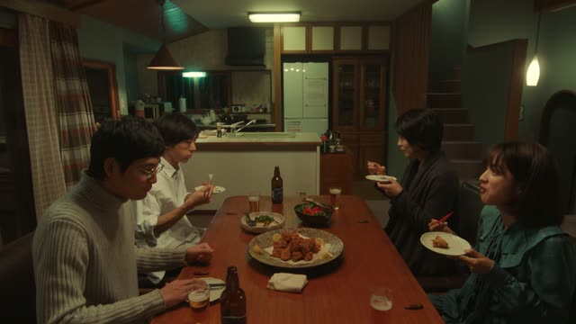

～なくてもいい
| Polite | ～なくてもいいです |
|---|---|
| Casual | ～なくてもいい・～なくていい |
Same meaning: "you don't have to". Only the politeness changes.
Death Note · Episode 7
話さなくていいんですか？
"You don't need to talk to him?" [her call to his father is through]
～なくてもいい means "you don't have to, it's fine not to". Take the ない-form, change ない to なくて, add もいい: 話さない → 話さなくてもいい. In speech the も often drops: 話さなくていい.
On this card, Light offers Naomi the phone, and she says there's nothing to talk about. んですか makes it polite.
It's the opposite of ～なくてはいけない (must).
1 Litre of Tears · Episode 6
急がなくていいからね。
"You don't have to hurry."
On this card, a bus driver waits kindly for Aya, who walks slowly. 急がなくていい: no need to rush.
Quick Examples
Your friend offers to pay.
払わなくてもいいよ。
"You don't have to pay."
CasualA host welcomes you.
靴は脱がなくてもいいですよ。
"You don't need to take your shoes off."
PoliteYour coworker is stressed.
全部今日やらなくていいよ。
"You don't have to do it all today."
CasualA doctor's advice.
もう薬は飲まなくてもいいです。
"You don't need to take the medicine anymore."
PoliteWith and without
急がなくてはいけない。
"You have to hurry."
急がなくてもいい。
"You don't have to hurry."
Examples from Media
Oishinbo · Episode 37
私も今日じゃなくていいです！
"It doesn't have to be today for me either!"
After a noun: じゃなくていい.
Kekkon Dekinai Otoko · Episode 12
俺の心配なんてしなくていいでしょう。
"You don't need to worry about me."
Slam Dunk · Episode 86
私がじたばたしなくても大丈夫。
"It'll be fine without me making a fuss."
なくても大丈夫: same idea.
Shirokuma Cafe · Episode 48
ナマケモノ君は食べなくていいの？
"Sloth, don't you need to eat?"
Good Morning Call · Episode 6
そんな、気使わなくていいからさ。
"You don't have to tiptoe around me."

Quartet · Episode 1
僕のトラウマ、想像しなくていいよ。
"You don't need to imagine my trauma."
Vinland Saga · Episode 14
冬越しの心配はしなくていい。
"You don't need to worry about the winter."
Odd Taxi · Episode 3
お前は何も知らなくていい。
"You don't need to know anything."